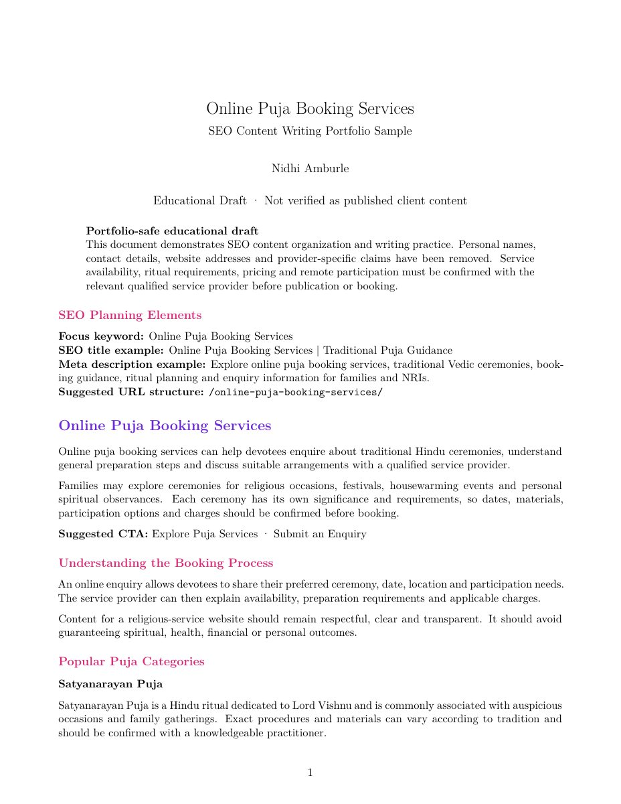
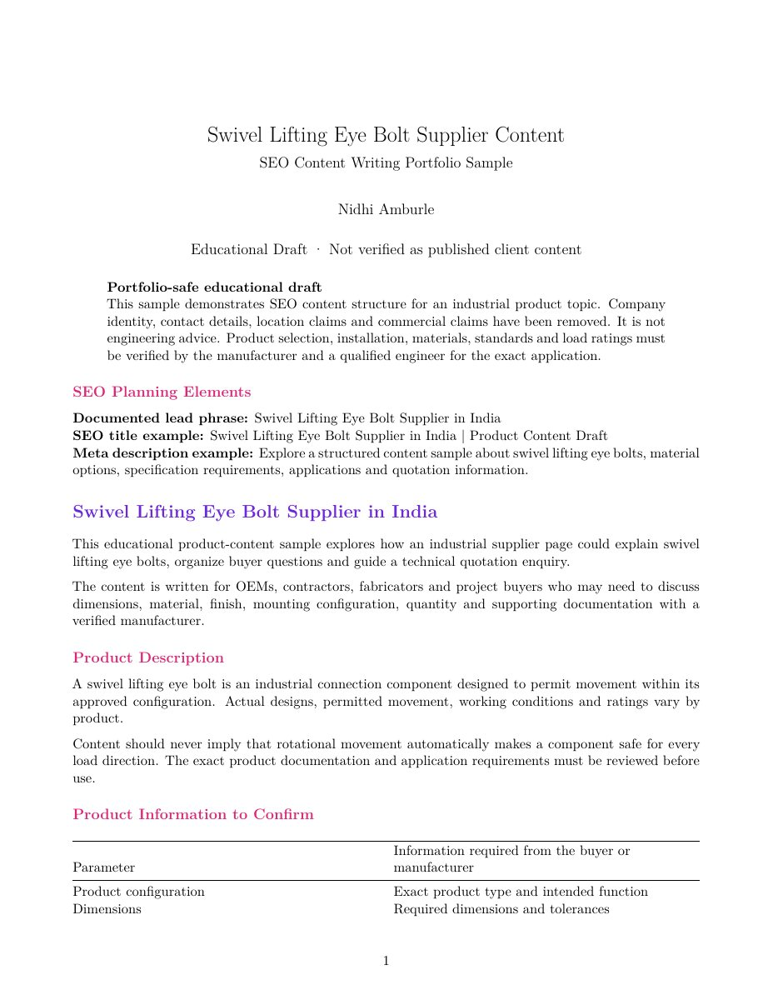
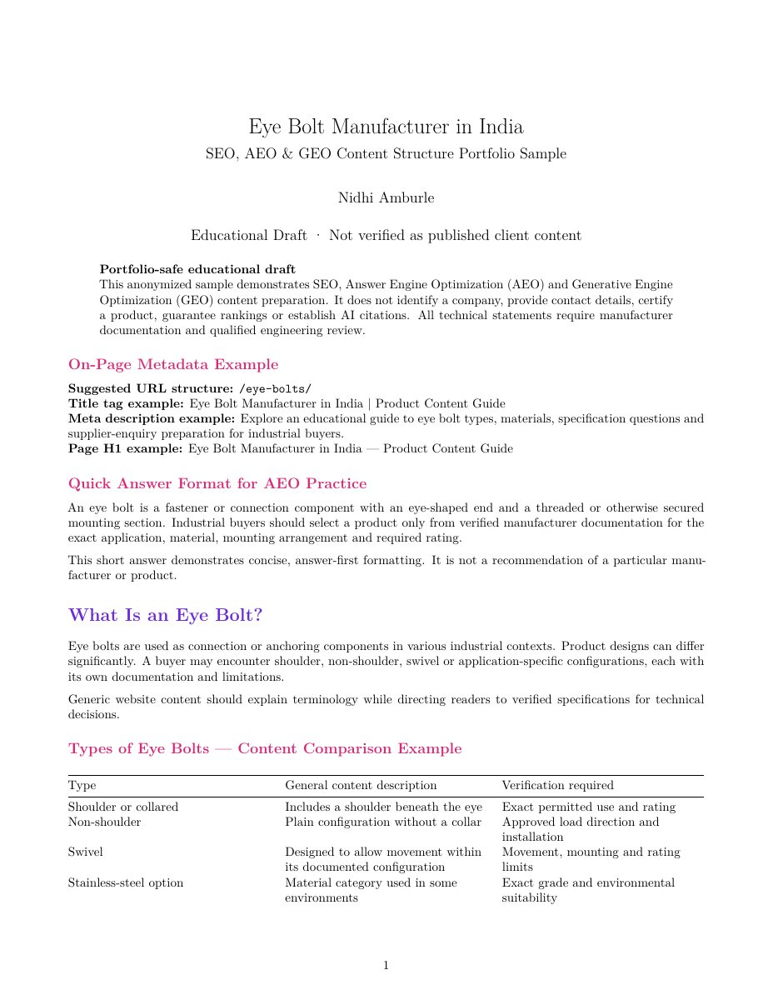

Match search intent
Understand whether the reader needs service guidance, product specifications, selection help or a quotation pathway.
SEO CONTENT / ON-PAGE OPTIMIZATION / PRACTICAL LEARNING
Three portfolio-safe content samples exploring how search intent, clear structure and answer-focused writing can support useful website content.
These anonymized portfolio versions are based on my original training drafts for online puja services and industrial manufacturing. They demonstrate content preparation techniques—not paid employment, verified publication, rankings, indexing, traffic, conversions or proven AI-search visibility.
01 / PROJECT OVERVIEW
This practical project brings together three content drafts created for two different industries: an online puja booking service and industrial lifting hardware. The subjects required different tones, user questions and conversion paths while sharing the same foundation of clarity, relevance and logical content structure.
The work demonstrates content preparation and optimization recommendations. It does not confirm that the suggested pages, metadata, links or schema were implemented on a live website.
02 / PROJECT OBJECTIVES
Understand whether the reader needs service guidance, product specifications, selection help or a quotation pathway.
Organize long-form information into descriptive headings, short explanations, tables, lists and FAQs where appropriate.
Practice placing documented target phrases in titles, headings and body copy without replacing readability or context.
Connect informational content to relevant enquiry, booking or quotation calls to action without claiming conversions.
03 / MY ROLE & RESPONSIBILITIES
04 / CONTENT WRITING & OPTIMIZATION PROCESS
This summarizes the content-development practice demonstrated by the supplied drafts. It does not represent a live publishing or performance-measurement workflow.
05 / SEO TECHNIQUES PRACTICED
The Panditji draft documents a focus keyword, SEO title, meta description and recommended URL. The complete Eye Bolt package also includes suggested URLs, a title tag, meta description and page H1.
All three samples use keyword-focused titles and descriptive sections. Only techniques explicitly visible in each original are attributed to that sample.
Service content addresses booking questions and pricing factors, while manufacturing content supports product understanding, selection and quotation enquiries.
Question-led sections answer practical concerns, followed by relevant booking, enquiry or request-a-quote pathways.
The complete Eye Bolt package includes a dedicated internal-link recommendation section with proposed destinations and anchor-text guidance.
Product tables, service lists, selection guidance and step-by-step sections make long-form information easier to scan and understand.
06 / AEO & GEO CONTENT TECHNIQUES
The third sample is the only document explicitly presented as a complete SEO, AEO and GEO content package. Its techniques are preparation choices—not evidence that an AI system cited the content.
A concise opening response is labeled for featured snippets and AI answer engines.
Questions mirror real informational searches and are paired with direct responses.
The draft contains proposed FAQPage, Organization, Product and BreadcrumbList JSON-LD.
Plain definitions, comparison tables and consistent named entities are recommended for easier machine interpretation.
07 / PORTFOLIO-SAFE CONTENT SAMPLES
Each preview is generated from page one of its anonymized portfolio-safe PDF. “View PDF” opens the complete safe document in a new tab; “Download PDF” downloads that educational draft. Original source PDFs are intentionally not published.
Personal and business contact details, addresses, registration identifiers, company-specific claims and competitor commentary have been removed. Safety-critical industrial guidance has been replaced with verification disclaimers, and SEO/AEO/GEO techniques are not presented as guaranteed results. These PDFs are educational portfolio adaptations; the original source documents remain private and unchanged.

Includes an SEO title, meta description, safe URL structure, service descriptions, booking steps, overseas-devotee guidance, pricing factors, FAQs and an enquiry CTA.

Uses product explanations, an enquiry-specification table, material topics, selection questions, commercial/RFQ structure, FAQs, a quotation CTA and safety-verification disclaimers.

Contains safe metadata examples, an answer-first block, qualified product sections, FAQs, placeholder internal links, an on-page checklist, schema planning and non-guaranteed AEO/GEO techniques.
08 / TOOLS USED
The three supplied PDFs are Google Docs exports used to prepare and organize the content samples.
The documents contain headings, metadata, FAQs, tables, calls to action and optimization notes. No additional writing or scoring software is attributed without evidence.
09 / SKILLS PRACTICED & KEY LEARNINGS
Practiced long-form service and product writing with clear topic focus and useful section flow.
Worked with titles, descriptions, headings, lists, tables, FAQs and relevant calls to action.
Learned to distinguish informational questions from booking, selection and quotation needs.
Learned to present AEO/GEO preparation as a technique—not a promise of rankings, citations or results.
A practical writing and optimization portfolio sample from my training journey. Technical, safety, company and service claims require owner or subject-matter review before live publication.